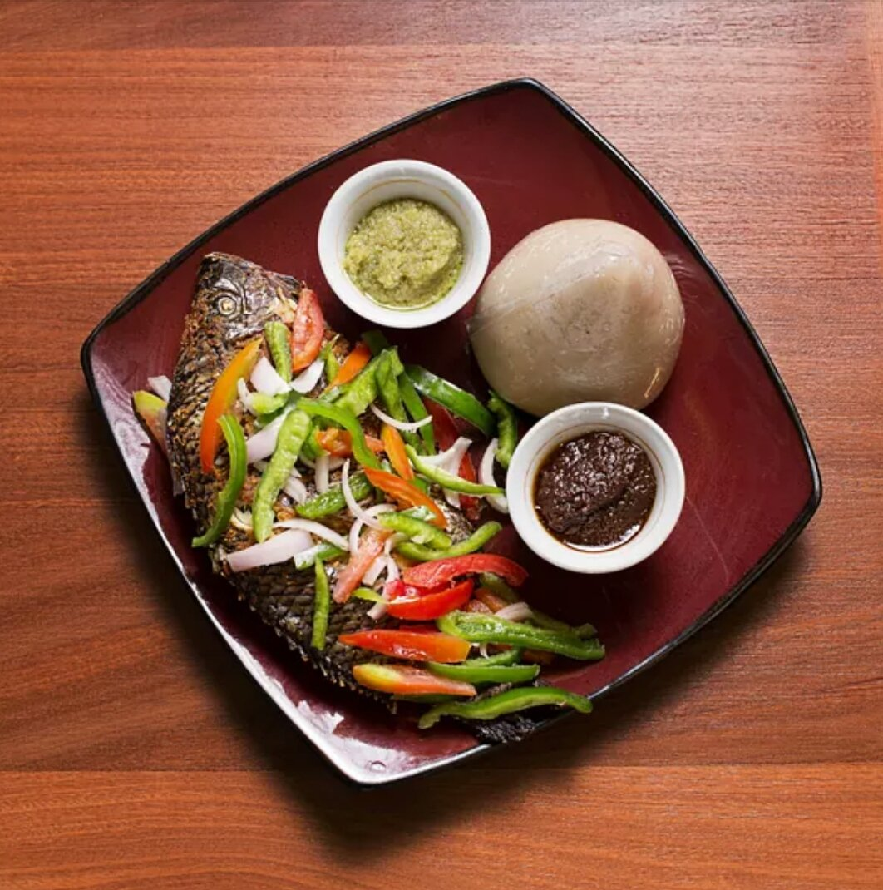

Banku

A corn based food served with pepper sauce and tilapia
ingredients
banku ingredients
- Corn dough
- Cassava dough
- Salt
- water
gilled tilapia ingredients
- Fresh tilapia
- Natural spices such as garlic,ginger,rosemary
- pepper
- onion
preparation
banku preparation
- Thoroughly wash your hands before you begin to prepare the meal.
- Mix the corn dough with the cassava dough in a pot. Mix and mash the dough to form a smooth paste as you ensure that you remove all the fibre pieces and the lumps.
- Using your hands continue mixing until the dough forms a paste-like mixture. When it gains an extremely smooth consistency, add a pinch of salt.
- Place your pot with the mixture on medium heat fire and stir gently using a wooden stirrer. (Banku ‘ta’). Continue stirring gently until the paste begins to thicken.
- The mixture will continue to get thicker and thicker with time such that it begins to gather at the bottom of the wooden stirrer. At this point, you will be required to add more force as it getting harder.
- Lower the heat and using sackcloth or a napkin, hold the pot in one place and use a wooden spoon to beat through the mixture. Continue with the beating for roughly six minutes as you make brief stops in between the beating.
- Create some perforations on the thick mass using the wooden spoon and add water. Increase the fire, cover the pot and leave it for around 10-15 minutes to cook thoroughly.
- Check on the mixture to make sure that the water doesn’t dry up completely. Repeat the process of kneading until you achieve the smoothness of your choice.
- When it gains the smoothness of your satisfaction, take a smaller bowl and use it to shape it into you desired serving shapes and sizes.
grilled tilapia preparation
- Get the tilapia ready by removing the scales. Wash the fish with warm water and salt to get rid of all the slime.
- Cut it open on both sides and well as the belly.
- Create the seasoning by blending the ginger, garlic, onion and pepper.
- Create the seasoning by blending the ginger, garlic, onion and pepper.
- Use the blended mixture to dress and rub the entire fish and leave it for 10-15 minutes so that it absorbs the seasoning.
- Grill the seasoned fish using the oven or through the local African way, by using firewood.
- Turn it side to side to ensure that it gets well grilled. As you turn it, be sure to be glazing the fish with some oil to prevent the fish from burning or getting stuck on the grill.
- After a few minutes of intermittent glazing and turning the grilled tilapia is ready.